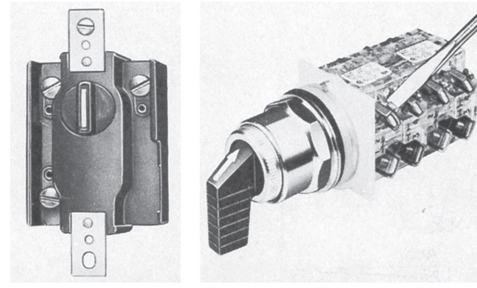
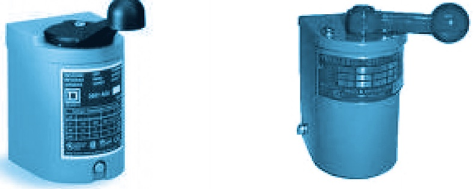
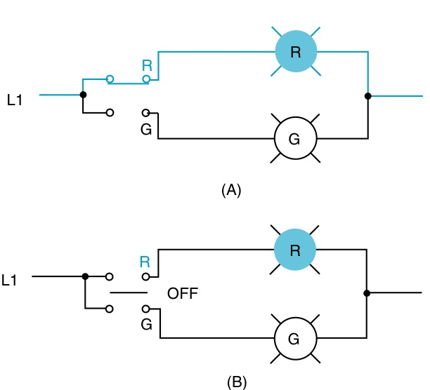
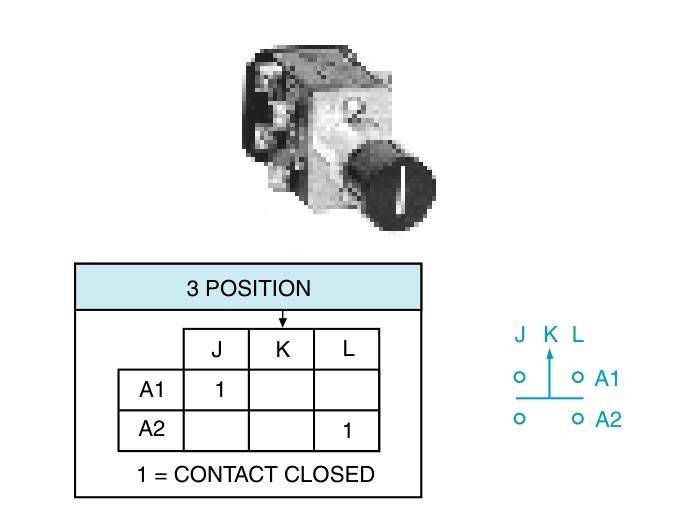
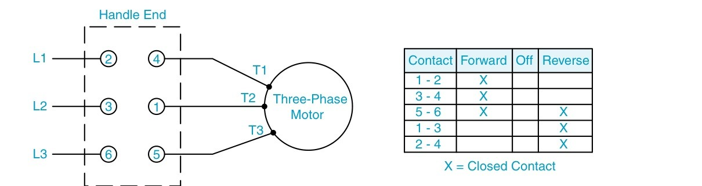

สวิตช์เลือกตำแหน่ง (selector switch) ใช้บิดเลือกการทำงาน เช่น มือ/หยุด/อัตโนมัติ หรือเลือกหลอดที่จะติด ข้างในมีลูกเบี้ยวบนแกนเดียวกันกดหน้าสัมผัสแต่ละชุดให้ต่อหรือเปิดตามตำแหน่ง ในแบบจึงต้องบอกให้ได้ว่าหน้าสัมผัสไหนต่อในตำแหน่งไหน ด้วยตารางหน้าสัมผัส (contact chart) สวิตช์ดรัม (drum switch) ใช้หลักเดียวกันแต่ตัดต่อไฟเข้ามอเตอร์โดยตรง และใช้กลับทางหมุนได้
A selector switch is turned to choose an operation, such as hand/off/auto, or which lamp is lit. Inside, cams on one shaft press each contact closed or let it open according to the position, so a drawing must say which contact is closed in which position, with a contact chart. The drum switch works the same way but switches the motor supply directly, and can reverse the motor.
รูป 6-5 ของ EMC9 คือสวิตช์เลือกสองแบบ: ซ้ายเป็นแบบงานหนัก ขวาเป็นแบบ 22 mm ที่ยึดบนหน้าตู้ ด้านหลังมีชุดหน้าสัมผัสซ้อนกันหลายชุด เหมือนปุ่มกดในหน้า 3.1 ต่างกันที่หัวบิดหมุนแกนลูกเบี้ยว แทนแกนกดที่เลื่อนขึ้นลง
การ์ดด้านล่างเป็นสวิตช์ลูกเบี้ยวขนาดใหญ่ที่เห็นชั้นของหน้าสัมผัสชัด ส่วนรูป 3.10 ของตำราไทยคือสวิตช์ดรัม หน้านี้เพิ่มสัญลักษณ์ IEC และตารางหน้าสัมผัสของสวิตช์ทั้งสองแบบ
EMC9 Fig. 6-5 shows two selector switches: a heavy-duty one on the left and a 22 mm panel-mounted one on the right, with several contact blocks stacked behind it, like the push button of page 3.1. The difference is that the head turns a cam shaft instead of pushing a plunger.
The card below is a large cam switch whose contact decks are easy to see, and Thai textbook Fig. 3.10 shows drum switches. This page adds the IEC symbols and contact charts of both kinds of switch.


บิดหัวสวิตช์ (แตะวงกลม I, 0, II) หรือแตะสวิตช์ S1 ในวงจร แล้วดูว่าหน้าสัมผัสไหนต่อ หลอดไหนติด และแถวไหนของตารางหน้าสัมผัสสว่าง ทุกตำแหน่งที่ลองจะบันทึกลงตาราง จากนั้นเปลี่ยนเป็นแบบสปริงคืนกลาง แล้วกดค้างที่ I: ปล่อยมือเมื่อไร หลอดดับทันที
Turn the head (tap the circles I, 0, II) or tap S1 in the circuit, and see which contact closes, which lamp lights and which row of the contact chart lights up. Every position you try is recorded below. Then switch to spring return and hold it at I: the lamp goes out as soon as you let go.
รูป 6-7 ของ EMC9 คือวงจรเดียวกันในแบบ NEMA ของอเมริกา: (A) บิดไปที่ R หลอดแดงติด (B) ตำแหน่ง OFF ไม่มีหลอดติด ในแบบ IEC ด้านบน หน้าสัมผัสสองตัวของ S1 วาดแยกกันคนละแนว แต่ชื่อเดียวกัน และบอกตำแหน่งที่ต่อด้วยตัวอักษรข้างหน้าสัมผัส
EMC9 Fig. 6-7 is the same circuit in the American NEMA style: (A) turned to R, the red lamp lights; (B) at OFF no lamp is lit. In the IEC drawing above, the two contacts of S1 are drawn apart on separate paths but share one name, and the letters beside each contact say in which position it closes.

สวิตช์เลือก 3 ตำแหน่ง J, K, L มีหน้าสัมผัส A1 และ A2 ตามตารางในรูป 5-6 (ตัวเลข 1 = ต่อ) ต่อหลอด H1 ผ่าน A1 และหลอด H2 ผ่าน A2 (ก) ตำแหน่ง K หลอดใดติด (ข) ตำแหน่ง L หลอดใดติด (ค) ในแบบ IEC ต้องเขียนอะไรไว้ข้างหน้าสัมผัสแต่ละตัว
A three-position selector (J, K, L) has contacts A1 and A2 as in the chart of Fig. 5-6 (1 = closed). Lamp H1 is fed through A1 and lamp H2 through A2. (a) Which lamp is lit at K? (b) Which at L? (c) What must an IEC drawing show beside each contact?

บิดคันโยกไป F, 0 และ R แล้วดูว่าหน้าสัมผัสคู่ไหนต่อ (แถบสีตามสายที่ผ่าน) ขั้วมอเตอร์ T1 T2 T3 ได้ไฟจากสายไหน และมอเตอร์หมุนทางไหน ทุกตำแหน่งที่ลองจะบันทึกลงตาราง
Turn the handle to F, 0 and R and see which contact pairs close (coloured by the line they carry), which line reaches each motor terminal T1 T2 T3, and which way the motor turns. Every position you try is recorded below.
รูป 5-8 คือแบบต้นฉบับ: ขั้วหน้าสัมผัสเลข 1–6 อยู่ในกรอบประ L1 L2 L3 เข้าที่ 2, 3, 6 มอเตอร์ T1 T2 T3 ต่อที่ 4, 1, 5 และตารางบอกว่า Forward ต่อ 1–2, 3–4, 5–6 ส่วน Reverse ต่อ 5–6, 1–3, 2–4 ชื่อ Forward/Reverse เป็นเพียงชื่อ ทิศจริงขึ้นกับการต่อสายที่มอเตอร์
Fig. 5-8 is the original drawing: contact terminals 1–6 in the dashed box, L1 L2 L3 entering at 2, 3, 6, motor leads T1 T2 T3 at 4, 1, 5, and a chart saying Forward closes 1–2, 3–4, 5–6 while Reverse closes 5–6, 1–3, 2–4. Forward and Reverse are only names; the real direction depends on how the motor is connected.
